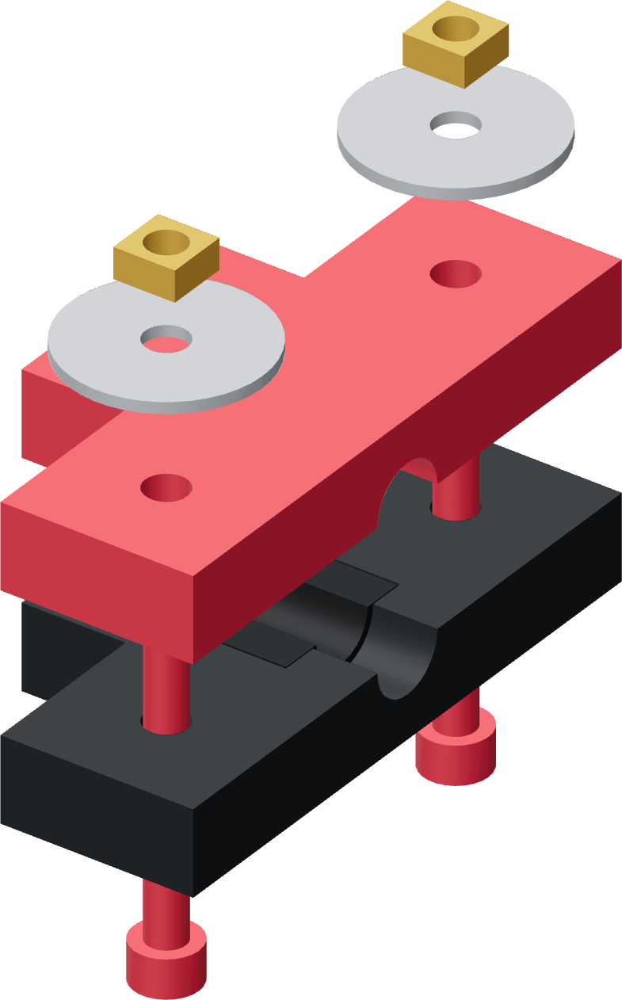

Bolt the two jaws together
The wide rear wings provide a hand grip and the shoulders the ram pushes. The narrow front faces the sleeved tube end.

- Pass one M5 × 50 screw upward through each of lower jaw D's two rear-wing holes.
- Place upper jaw E over them with its liner channel facing the lower channel.
- Put a Ø25 mm washer over each screw on the upper jaw, then thread on an M5 square nut.
- Leave the two screws loose enough to open the jaws around a tube. When used, close the hard mating faces evenly; those faces limit the liner squeeze.
Finished when
The jaw halves stay paired, open freely and close squarely. The upper washers sit fully on the rigid rear wings.